Lance Tadiosa
Undergraduate in Computer Science and Engineering
University of California Riverside , Bourns College of Engineering

Interests & Hobbies
Arts
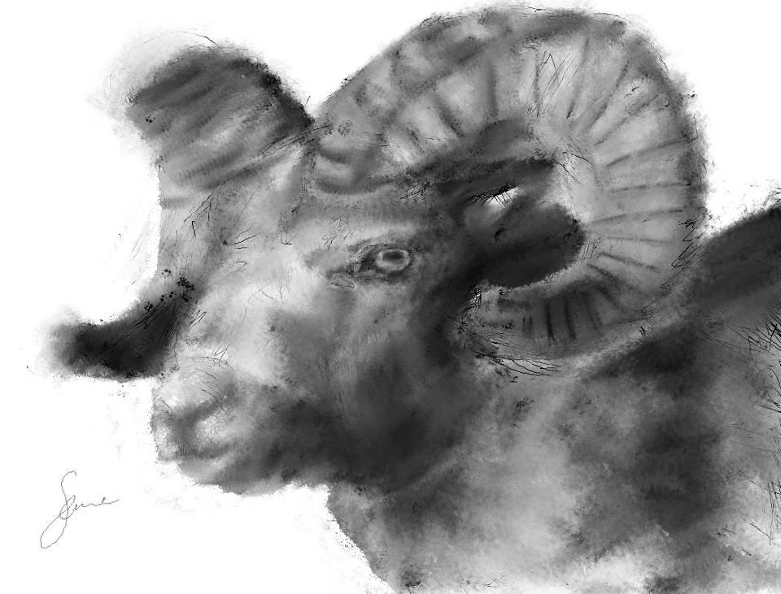
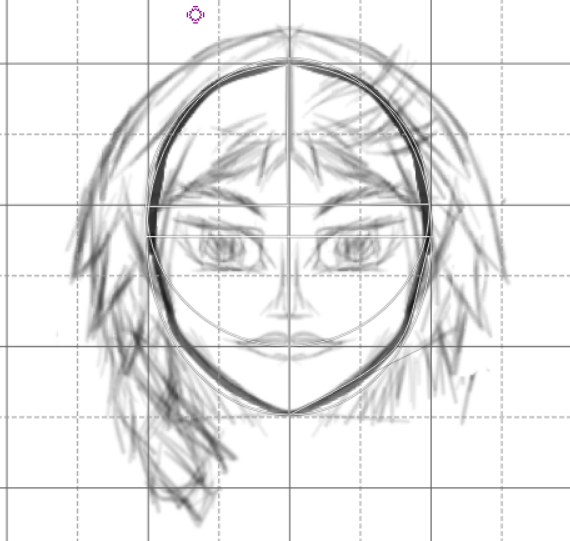
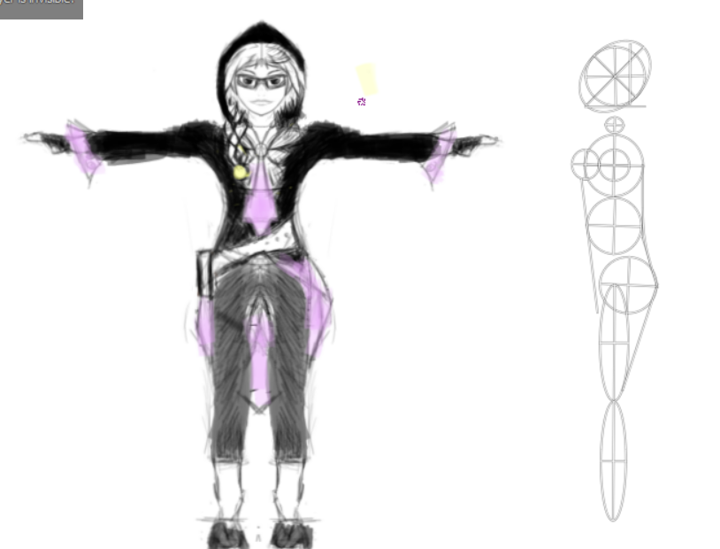
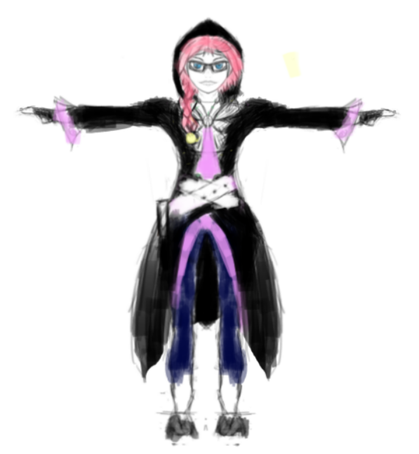
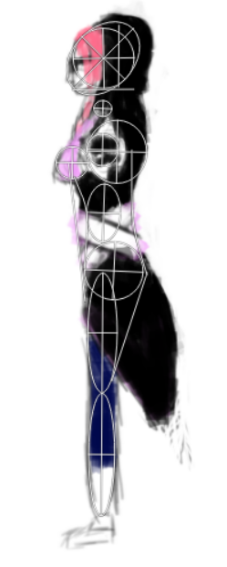
I like to draw occassionaly. I practice drawing often and I hope to be able to be good enough to be able to easily bring out images from head.
Crafts
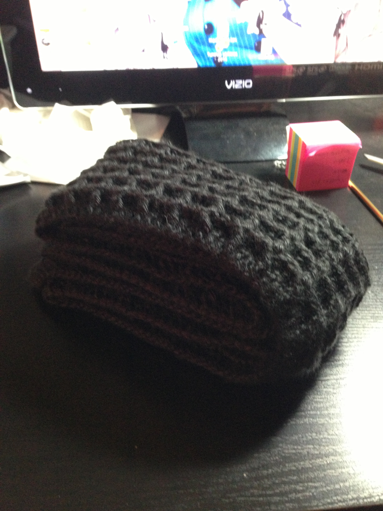
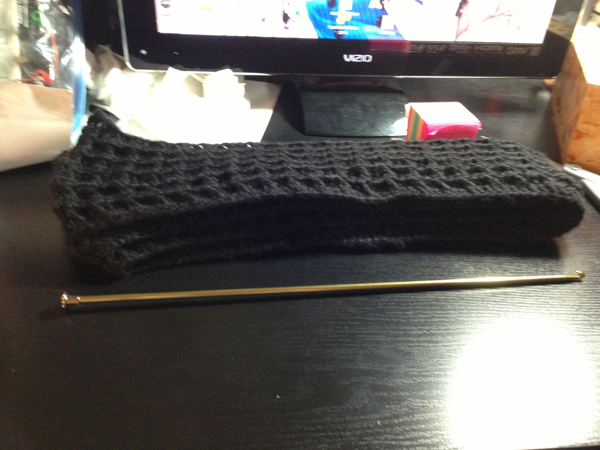
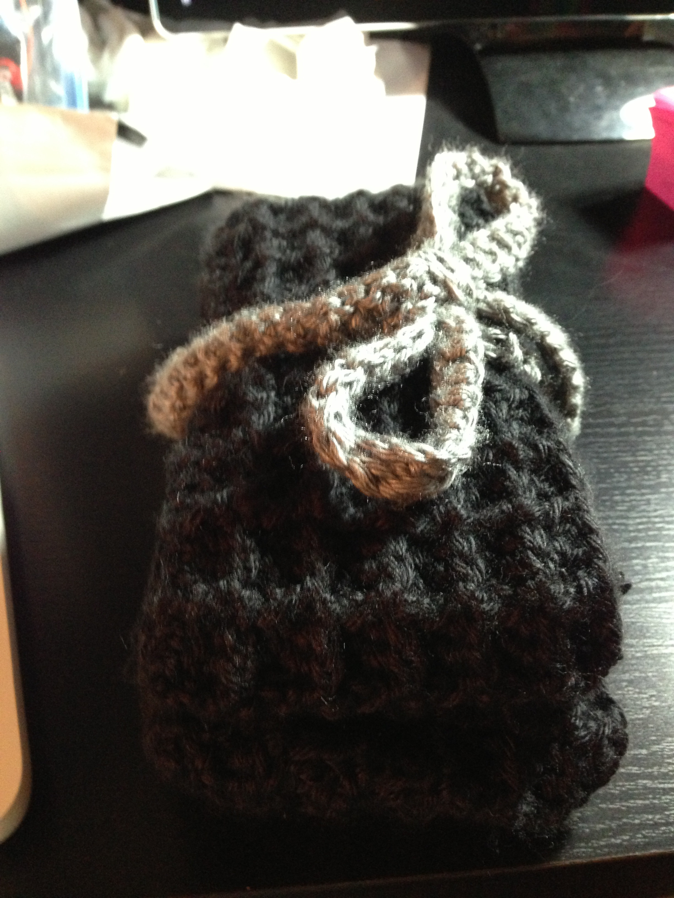
At time, I like to be able to be creative in other ways other than drawing.
Volunteer
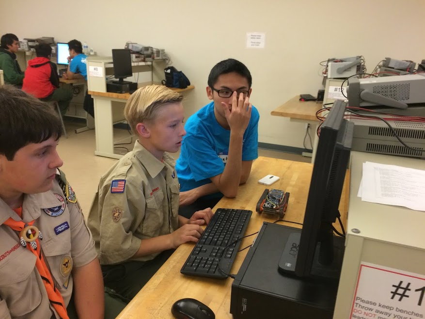
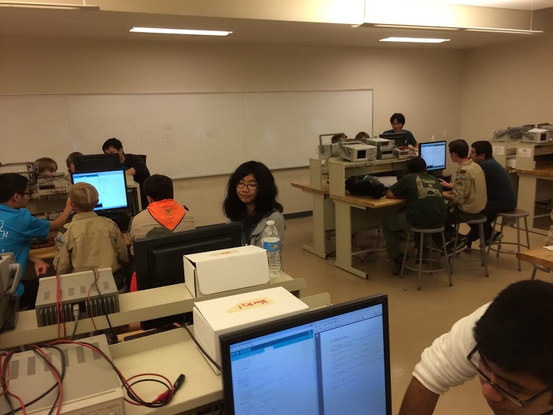
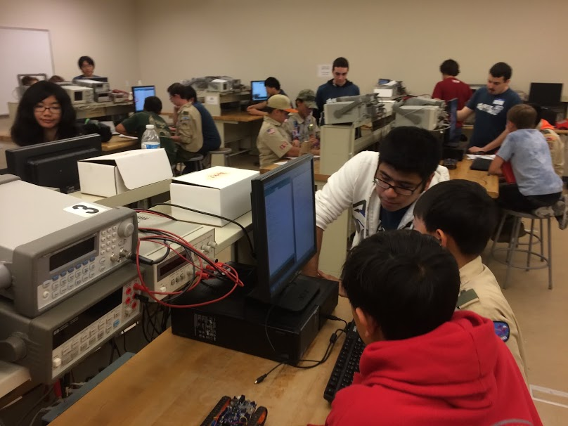
I enjoy volunteering. I think it provides great way to meet new people and practice leadership.